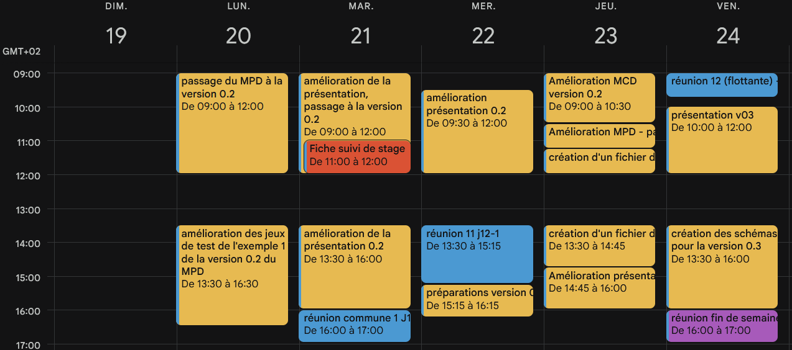

Suivi de Projet & Documentation
Cette section démontre ma capacité à piloter un projet informatique au sein du groupe OMNI du département DISC, à planifier mes semaines de travail via Google Calendar, à versionner mon code source et à produire une documentation technique et scientifique rigoureuse.
Savoir-faire méthodologiques couverts :
- SF-PROJ-1 : Rédiger une documentation technique opérationnelle pour le déploiement logiciel.
- SF-PROJ-2 : Assurer le suivi des livrables et la traçabilité des modifications via Git.
- SF-PROJ-3 : Maîtriser l'édition de rapports scientifiques structurés sous LaTeX / Overleaf.
- SF-PROJ-4 : Planifier ses phases de travail et coordonner les réunions via Google Calendar.
Trace 1 : Fichier de documentation technique (README.md) de l'API MucarGen
# MucarGen — API REST Multimodale Backend
Backend de transition et moteur de données pour le prototype Mu-CAR.
`MucarGen` sert de passerelle entre l'interface utilisateur (Front-end Vanilla JS via Vite) et la base de données relationnelle PostgreSQL.
## Fonctionnalités Implémentées
L'API expose un ensemble d'endpoints configurés sous le préfixe `/api/v1` :
1. Gestion des Arrêts (`GET /api/v1/stops`) : Extraction des points physiques de la table arret.
2. Profil Utilisateur (`GET /api/v1/user`) : Liaison relationnelle entre end_user et profil.
3. Tableau de Bord Éco (`GET /api/v1/eco/global`) : Calcul d'agrégation (SUM, COUNT) sur la table ticket.
## Utilisation et Lancement
### Option 2 : Lancement isolé avec Docker (Recommandé)
1. Construisez et démarrez les services :
docker-compose up --build
Légende Trace 1 : Extrait du fichier Markdown structurant l'architecture, la spécification contractuelle des routes de l'API et les procédures d'installation isolées.
Descriptif général & place dans le stage : La Trace 1 matérialise l'effort de rigueur indispensable à la pérennité d'un projet de recherche informatique. Afin que mon travail sur le backend de transition ne reste pas une boîte noire, j'ai rédigé cette documentation exhaustive à la racine de mon dépôt Git.
Utilisation des savoir-faire : J'ai mis en œuvre le savoir-faire SF-PROJ-1 pour structurer un guide de déploiement efficace. Comme souligné dans le [CADRE REMARQUABLE A], ce document détaille comment orchestrer le conteneur Node.js et l'instance PostgreSQL d'un seul bloc, permettant au second stagiaire chargé du Front-End de basculer instantanément ses requêtes d'un environnement simulé (*MOCK*) vers mon API réelle sans aucune friction de configuration.
Trace 2 : Historique de versionnage et journal des commits Git
$ git log --oneline --graph
* 7f8a3b2 (HEAD -> main) feat: ajout du Dockerfile et de l'orchestration docker-compose
* c3b2a19 docs: finalisation de la documentation des routes dans le fichier README.md
* e9f4d12 feat: implémentation de la route /api/v1/eco/global pour l'agrégation du CO2
* 3a2c5b1 fix: résolution du problème de timeout du pool de connexion dans db.js
* 8b1d4e7 chore: commit initial et configuration de la structure SQL de la base de données
Légende Trace 2 : Journal de suivi Git rédigé en français montrant l'arborescence des commits et la traçabilité rigoureuse des tâches de développement backend.
Descriptif général & place dans le stage : La Trace 2 montre l'historique de l'avancement itératif de mes modules. L'utilisation de Git a été ma méthode de suivi quotidienne.
Utilisation des savoir-faire : Le suivi rigoureux via Git (SF-PROJ-2) m'a permis d'isoler mes fonctionnalités. Chaque commit suit une logique explicite permettant d'identification immédiate si la modification concerne un correctif de base de données (fix), l'ajout d'une fonctionnalité d'ingestion (feat) ou la mise à jour de la documentation technique (docs).
Trace 3 : Rédaction scientifique de l'architecture logicielle sous l'environnement LaTeX
Section 9 — Architecture Backend (Spécifications Techniques)
\subsection{Flux de données et WebAPI}
L'architecture de transition s'articule autour d'une WebAPI dédiée qui assure l'aspiration des données externes et des flux en temps réel. Elle orchestre la transition technologique du projet Mu-CAR selon deux étapes clés :
\begin{enumerate}
\item \textbf{Étape 1a :} Récupération, filtrage et extraction des champs de données bruts.
\item \textbf{Étape 1b :} Sollicitation de la WebAPI moteur pour l'accès aux services algorithmiques critiques (liaison GBFCA).
\end{enumerate}
\subsection{Fichiers de configuration et d'initialisation}
Pour l'étalonnage et la calibration de l'instance, le système s'appuie sur des formats structurés (CSV / JSON). Un script d'initialisation dédié gère le remplissage automatique et l'amorçage de la base de données relationnelle PostgreSQL.
Descriptif général & place dans le stage : Au-delà de l'écriture du code source, un aspect crucial de mon intégration au groupe OMNI a été la formalisation théorique de mes recherches et de mes résultats sous forme de livrables académiques, en convertissant mes notes techniques des premières semaines en sections structurées.
Utilisation des savoir-faire : Cette brique de suivi a mobilisé le savoir-faire SF-PROJ-3. L'utilisation de LaTeX sur Overleaf m'a permis de m'affranchir des contraintes de mise en page pour me concentrer sur la rigueur scientifique de la structure. Comme illustré par le [CADRE REMARQUABLE B], cela m'a permis de formaliser précisément les mechanisms d'initialisation et d'ingestion de la WebAPI, alignant mes livrables de stage sur les standards d'édition exigés au sein du laboratoire FEMTO-ST.
Trace 4 : Planification hebdomadaire des tâches sur Google Calendar

Descriptif général & place dans le stage : La Trace 4 illustre la gestion du temps et le suivi organisationnel de mes missions au cours du stage. Moins prioritaire sur le plan purement technique que les autres traces, l'intégration de cet outil a néanmoins été essentielle pour structurer de manière réaliste mon rythme hebdomadaire de travail au sein du laboratoire.
Utilisation des savoir-faire : J'ai mis en pratique le savoir-faire SF-PROJ-4 en planifiant mes sessions de travail, mes points de situation réguliers avec mon tuteur et les temps d'échange avec les autres stagiaires, assurant ainsi une régularité dans la progression et la livraison de mes livrables.
Gestion de versions et traçabilité du code source (Git)
L'utilisation de Git en milieu professionnel impose une rigueur bien plus forte qu'en projet universitaire. Pour le projet MucarGen, j'ai adopté une nomenclature stricte de commits en français (feat:, fix:, docs:) afin de garantir une transparence complète auprès de mon tuteur de stage et de faciliter le suivi quotidien de l'avancement de mes modules.
Documentation technique, planification et rédaction scientifique (Markdown, LaTeX & Google Calendar)
Rédiger pour être relu et déployé par d'autres chercheurs est un défi méthodologique. J'ai structuré un fichier README.md exhaustif spécifiant chaque endpoint et formalisant l'orchestration sous Docker Compose. Parallèlement, l'organisation de mes phases de travail via Google Calendar m'a permis de structurer mon temps, tandis que l'apprentissage autonome de la syntaxe LaTeX sur l'éditeur Overleaf m'a aidé à formaliser l'architecture de la WebAPI et les flux d'ingestion (Étape 1a / 1b) dans le rapport technique du laboratoire.
Évaluation du niveau - Pilotage, Suivi et Documentation
Justification : J'ai acquis de bons réflexes en documentant plus régulièrement mes développements et en planifiant mes tâches. Mes livrables techniques et mon arborescence de commits sont structurés de manière transparente. L'apprentissage de LaTeX et l'utilisation de Google Calendar ont représenté un effort d'organisation bénéfique, me permettant de fournir des documents conformes aux attentes du département DISC tout en respectant les échéances fixées avec mon tuteur.